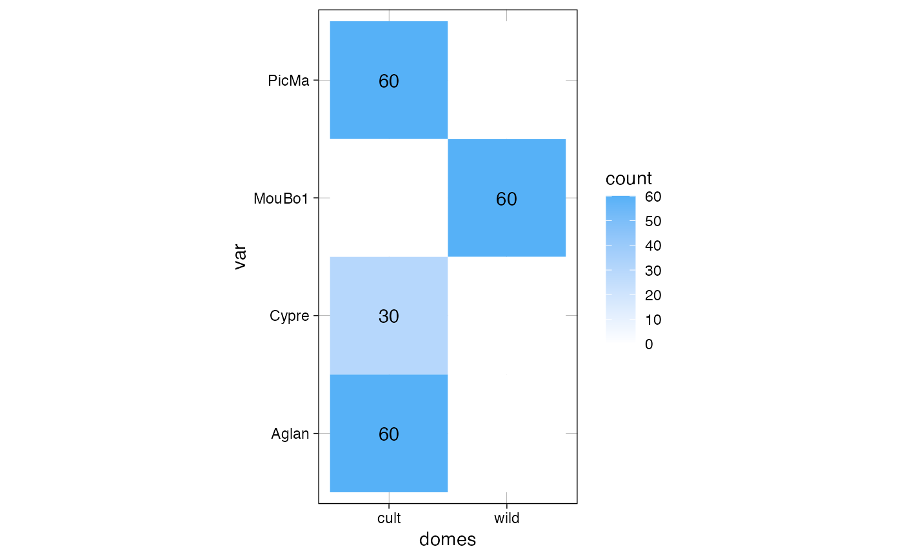
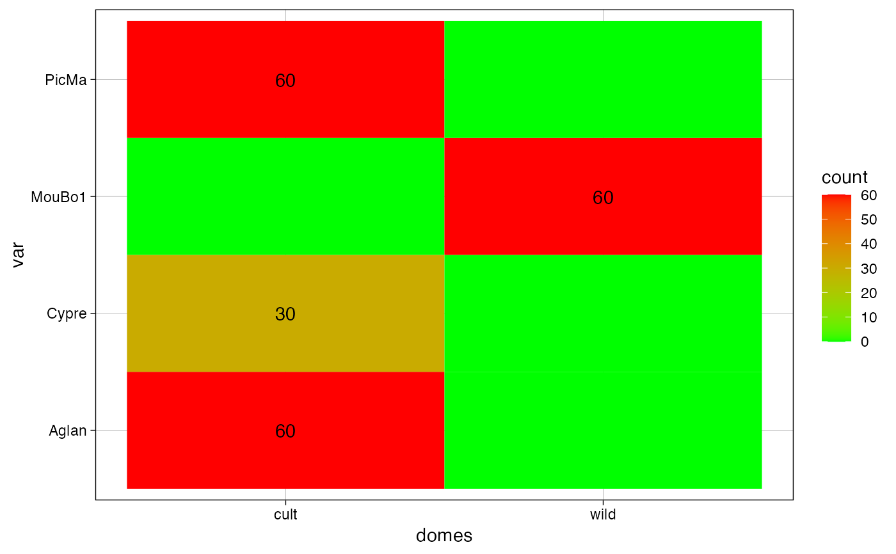

An utility that plots a confusion matrix of sample size (or a barplot) for every object with a $fac. Useful to visually how large are sample sizes, how (un)balanced are designs, etc.
plot_table(x, fac1, fac2 = fac1, rm0 = FALSE)
| x | any object with a $fac slot (Coo, Coe, PCA, etc.) |
|---|---|
| fac1 | the name or id of the first factor |
| fac2 | the name of id of the second factor |
| rm0 | logical whether to print zeros |
a ggplot2 object
Other plotting functions:
coo_arrows(),
coo_draw(),
coo_listpanel(),
coo_lolli(),
coo_plot(),
coo_ruban(),
ldk_chull(),
ldk_confell(),
ldk_contour(),
ldk_labels(),
ldk_links(),
plot_devsegments()
plot_table(olea, "var")#> Warning: `select_()` is deprecated as of dplyr 0.7.0. #> Please use `select()` instead. #> This warning is displayed once every 8 hours. #> Call `lifecycle::last_warnings()` to see where this warning was generated.plot_table(olea, "domes", "var")gg <- plot_table(olea, "domes", "var", rm0 = TRUE) gg#> #>gg + coord_flip()